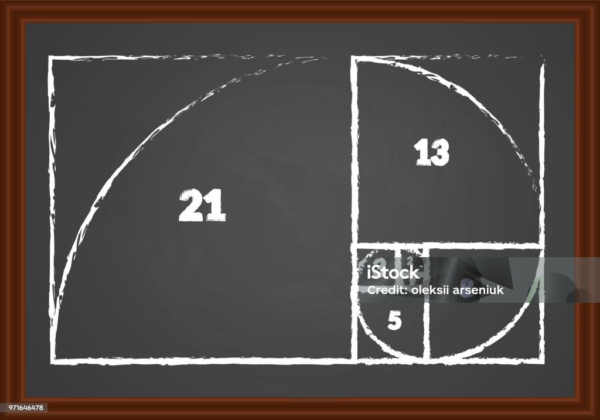
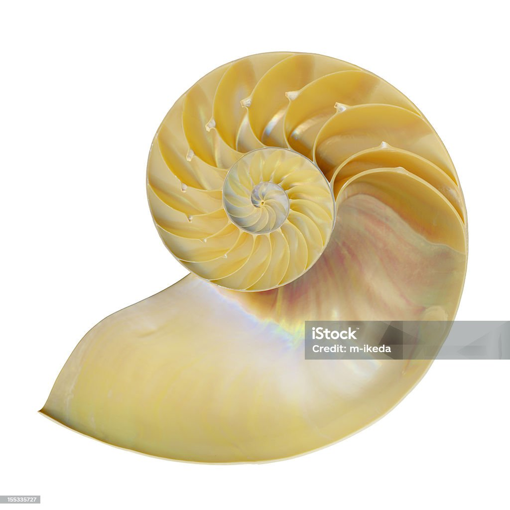

A divisão de um número da sequência pelo seu antecessor se aproxima cada vez mais da proporção áurea (1,618), considerada esteticamente perfeita e presente em diversas formas da natureza.
Exemplo: A divisão do número 55 pelo seu antecessor 34 resulta em 1,6176, que se aproxima da proporção áurea.
A sequência apresenta autosimilaridade, ou seja, partes da sequência se repetem em escalas maiores.
A Sequência de Fibonacci pode ser vista em diversos padrões da natureza, como:
Observação: A sequência não é uma regra rígida, mas sim uma aproximação que se observa em diversos organismos.
